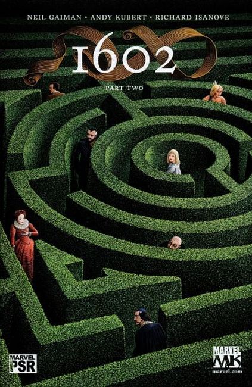
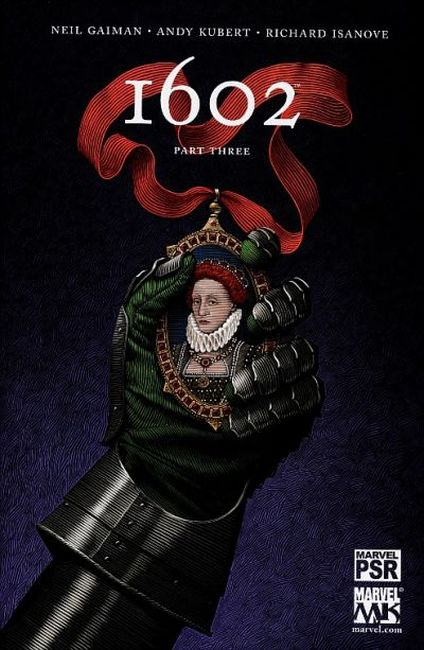
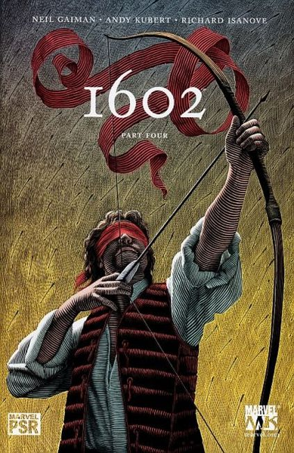
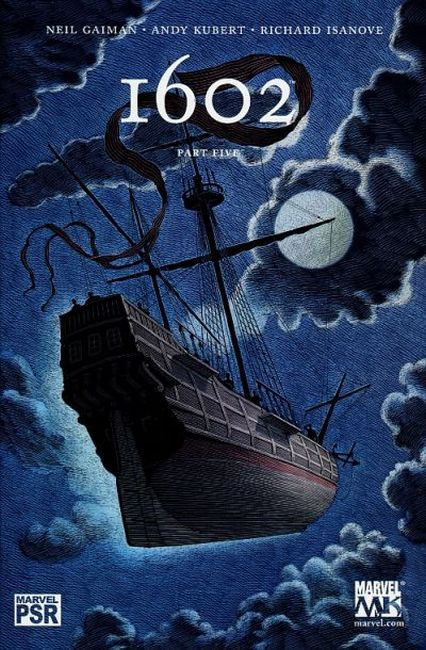
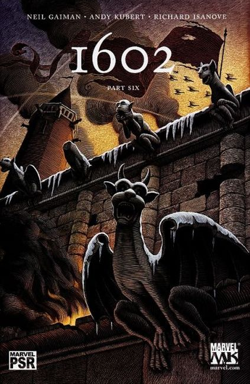
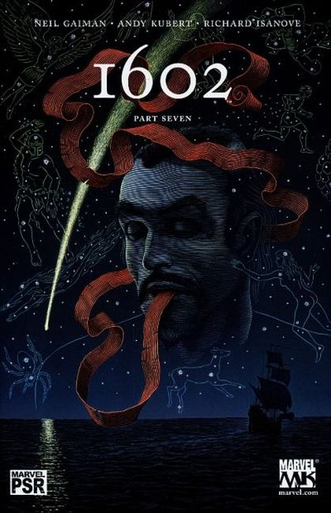
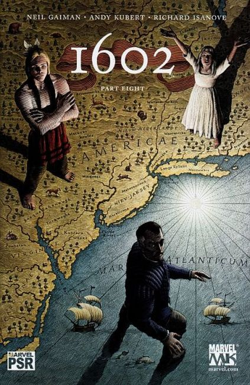

NEIL GAIMAN'S first work at marvel.

"It wasn't meant to be a secret..." I get it all the time now. I just arrived in Portugal, in Lisbon, to promote CORALINE, and the first question I was asked, in the car from the airport to the hotel was 'So, can you tell me anything about 1602?' And I said, 'I saw a photocopy of the first issue and it looks pretty good.' 'Yes, but the story .... What's it about?' 'Oh, you know,' I said. 'Stuff.' 'Well, is it the Marvel characters? Or characters you invented yourself?' 'Yes,' I said. 'That's pretty much it.' 'But how long is it?' 'I think it'll be eight issues. It was meant to be six, but I'm writing episode 5 right now, and there's a lot of story to tell.'

'So why is it such a secret...?' It got to be a secret because the idea of 1602 was fairly straightforward, and really fun, and I hated the idea of people being familiar with it, even bored of it, by the time it came out. So I asked Joe Quesada if he'd mind if we didn't make a big announcement at the start.

But the more people asked me, buttonholed me, pleaded with me, the more I liked the fact that only a tiny handful of people at Marvel and I had even seen Andy's amazing pencils or Richard's colours. This was starting to be a genuinely fun secret - like not telling someone what their birthday present is until it's time to unwrap it.

What am I going to tell you? It's really fun. It's set in the Marvel Universe. It looks gorgeous. You may even like it. There are sixteen hundred and two good reasons for telling you all about it, and I'm not saying a word. Think of it as your birthday present."

All's not well in the Marvel Universe in the year 1602 as strange storms are brewing and strange new powers are emerging! A rich new vision of the Marvel Universe that Gaiman promises is NOT a 'What If" story. But how do Spider- Man, the X-Men, Nick Fury, Dr. Strange, Daredevil, Dr. Doom, Black Widow, Captain America and more Marvel stars appear in the year 1602?

Matthew Murdoch continues to make his way across Europe to get the mysterious Templar treasure that Dr. Strange thinks will give him the key to the mysterious weather changes. But can he get to it before Otto Von Doom? And what does the first American- born child, Virginia Dare, have to do with it all?

With the country in turmoil, Dr. Strange learns Virginia Dare's dark secret, Peter Parquargh is captured by the X-Men, and Fury is placed in an impossible position! Sir Nicholas Fury leads an army against Carlos Javier's Witchbreed! And we learn the true history of the Four from the Fantastik. Doctor Strange goes to the moon, while our heroes take on Doom and his Vulture squadron! Secrets are revealed and coffins are closed as two of our 17th-century Marvel heroes lose their lives in the penultimate chapter to this major, best-selling limited series event! Secrets revealed, mysteries explained! A mighty sacrifice, Worlds live, Worlds die, Heroes make choices and so do villains.